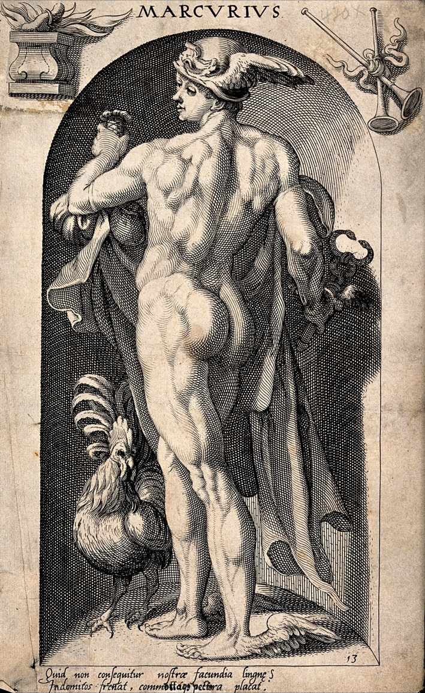

KNOWLEDGE
ARCHITECTURE ATLAS


HISTORICAL REFERENCE / 1588
HERMATHENA
THE ALLIANCE
Hermathena brings together Hermes (Mercury) and Pallas Athena (Minerva). In a letter to Atticus in 66 BC, Cicero welcomed a Hermathena for his Academy at Tusculum: Hermes belonged to the world of the gymnasium, and Minerva was especially appropriate to his own intellectual setting. The exact form of that ancient object is uncertain. In 1588 Jacob Matham, after Hendrick Goltzius, engraved The Alliance of Athena and Mercury. The helmet and caduceus help distinguish the two figures.
Within System Notes, this historical encounter becomes a visual reference for the relationship between recognising structures, interpreting information and designing knowledge. The contemporary Hermathena card extends that alliance into the domain of performance.
Artwork records / sources
Pallas Athena — Rembrandt and pupil · c. 1657 · Image source.

Hermathena — Jacob Matham, after Hendrick Goltzius · 1588 · Collection record.
Ancient reference — Cicero, Letters to Atticus 1.4.3 · Treccani, Hermathena.
Mercurius — historical engraving · attribution pending.
Comparative archive

